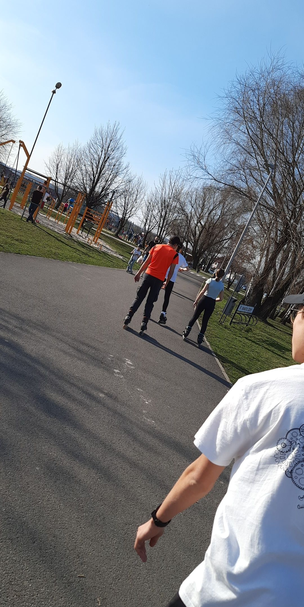

How did my journey with rollerskating start?
Unexpected start
During the Covid-19 pandemic I've had plenty of time to think about my life and so I decided that I wanted to learn new things and gain new skills. Back then I wasn't really aware of the fact that rollerskating was about to become a very big part of my life. Down below is the photo of my first ever rolling skates:
Quick improvement
In the beginning I struggled to surpass distance of 10 metres in front of my house. To be honest I almost gave up after first 50 tries but then I decided to try roller skating on the track near my living place. I had much more space that way and I felt more comfortable after all. Also, I've invited my friends who can roller skate very well to teach me. After 2 months I was properly skating forward and for me it was a big success!

Overall experience and friends I made by roller skating
Way to spend time
For me roller skating is amazing. I've always wanted to have many hobbies and roller skating is one of the best in my life. Every time I had free time or just felt I needed to go skating I simply went out of house and for a couple of hours I could just completely deep dive into this world. When I am roller skating I just forget about my problems and let myself live in the moment
Roller skating friends
I don't know a better way to make friends rather that just go skating with them. In the 3-4 months time I was able to make dozens of friends by simply asking if they would like to go roller skating with me! All that was needed for that to happen was one party and two pairs of working roller skates.
